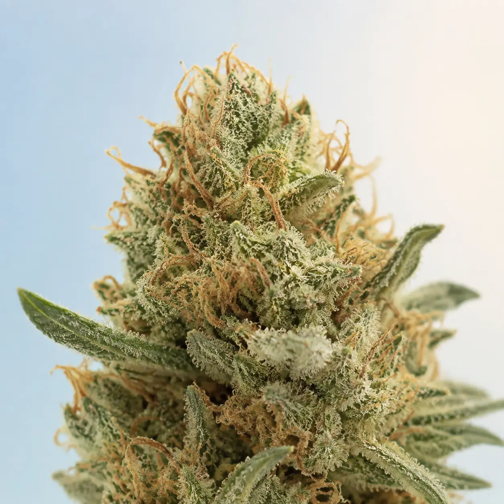

Strain names are not standardized effect or cannabinoid promises. This page describes common market stories and observable buying clues—not a guaranteed experience or medical use.
THE USEFUL PART
Keep these in your head.
- White CBG is a shared market name, not one globally identical product.
- Use the current label and certificate of analysis instead of relying on folklore.
- Aroma words can help comparison; effect adjectives cannot predict every person.
- Record producer, batch, format, potency, and context when taking notes.
The field-note profile

REPRESENTATIVE PHOTOCategory-matched editorial image—not proof of cultivar identity.- COMMON LINEAGE STORY
- Oregon CBD identifies White CBG as its foundational White CBG line; the reviewed breeder pages do not publish a simple two-parent pedigree
- CANNABINOID SHORTHAND
- CBG-dominant hemp
- RETAIL SHORTHAND
- balanced leaning
- AROMA SHORTHAND
- very frosty or “snow-covered” appearance (breeder description)
- HISTORICAL CONTEXT
- A purpose-bred CBG-dominant hemp line documented in Oregon CBD's public breeding notes
- PRIMARY / NAMED SOURCE
- Oregon CBD — CBG breeding note
The story attached to the name
Oregon CBD describes the mother of its White CBG line as unusually snow-covered in appearance and discusses the line as part of its work to stabilize CBG-dominant hemp.
That breeder documentation supports the origin and visual naming story. It does not prove that a retail flower called White CBG came from that line, has a particular cannabinoid percentage, smells a certain way, or qualifies as hemp under the law that applies to the finished batch.
A strain name is closer to a song title than a laboratory standard: familiar words can introduce very different performances.
Aroma language worth using
Use these as prompts, not an answer key. Smell the product when lawful and practical, compare the aroma with the label panel, and note whether it is clean, vivid, muted, stale, musty, or chemically concerning.
Aroma can change with cultivation, harvest timing, cure, age, package, extraction, and added terpenes. A vape carrying the same name may not smell like the flower.
Effect folklore versus evidence
White CBG's name describes a breeding and cannabinoid direction, not a clinically demonstrated outcome. The breeder material reviewed for this note does not establish that the cultivar reliably produces focus, calm, pain relief, energy, or any other human effect. CBG research does not turn a cultivar name into a treatment recommendation; use the batch evidence and take health questions to a qualified professional.
Format, THC concentration, CBD content, serving size, other substances, food, sleep, prior exposure, setting, and expectations can all matter. “Balanced leaning” is an aisle sign, not permission to drive, work at height, supervise a child, or operate a boat.
What “CBG-dominant” can—and cannot—tell you
Cannabigerol, or CBG, is one cannabinoid found in cannabis. A CBG-dominant cultivar is bred so the harvested material may express CBG as its leading cannabinoid, but the name alone is not a laboratory result. Plant, harvest, processing, storage, and testing decisions still determine what appears on a finished-batch report.
Do not substitute a breeder's historical example, a seller's menu number, or another farm's report for the item in front of you. On the current certificate of analysis, identify CBG and CBGA separately, read the laboratory's calculation notes, and inspect every reported THC form. A large CBG number cannot answer the THC, contaminant, ingredient, or legal question.
The breeder record has a boundary
Oregon CBD's breeding note is useful for two narrow claims: the company identifies White CBG as its line, and it says the maternal plant was named for a distinctive snow-covered appearance. The same note explains that stabilizing low-THC CBG plants involved more genetic complexity than a simple slogan suggests.
That source is not an independent retail test, a universal pedigree certificate, or permission to copy cultivation figures from one release to another. Oregon CBD also lists a separate White CBG Seedless product. The original White CBG name and its triploid counterpart should not be collapsed into one product, and neither name authenticates unrelated flower.
Make the report match six ways
- Name and producer.
The report should identify the same business and product, not merely contain the words “White” or “CBG.”
- Lot or batch.
The printed identifier must match exactly.
- Material and dates.
Flower, extract, pre-roll, or another format must agree; sample and report dates should make sense for the package.
- Cannabinoid panel.
Read CBG, CBGA, delta-9 THC, THCA, CBD, and CBDA where reported, plus the lab's totals and reporting limits.
- Required safety panels.
Confirm the regulator-required contaminant scope for that product and market rather than assuming every hemp report covers the same tests.
- Report integrity.
Look for the laboratory, report identifier, page count, methods, and a lab- or regulator-hosted verification route.
USDA regulates hemp production under its program, while FDA and state or local authorities may govern finished products and consumer uses. “Passed hemp” at one production checkpoint does not settle every later retail rule.
Named and official sources
Sources reviewed September 4, 2026. Breeder claims are attributed; no batch potency, terpene panel, effect, medical result, or nationwide legality is inferred.
How to evaluate a White CBG product
- Verify the licensed producer and seller.
Names are easiest to copy in unregulated markets.
- Identify the exact format.
Plain flower, infused pre-roll, vape, concentrate, and edible are not interchangeable.
- Read the batch potency.
Do not inherit an old expectation from another producer.
- Check package and test dates.
Freshness can matter more than a famous name.
- Compare aroma and ingredients.
Added terpenes or flavor ingredients change the product.
- Keep one-line notes.
Producer + batch + format + setting is more useful than a five-star strain rating.
The caution specific to this reputation
Do not let the name lower your guard
CBG-dominant and hemp are not synonyms for tested, legal everywhere, non-impairing, interaction-free, or medically effective. Check the exact lot, full cannabinoid panel, total-THC calculation, source, ingredients, and current jurisdiction rules.
No strain name cancels general safeguards: adults 21+, no impaired driving, no mixing with alcohol by default, careful storage, and professional health advice when medicines or health conditions may be relevant.
A better note template
Big Bud Man standard: know the source, read the batch, protect kids and pets, and never drive impaired.